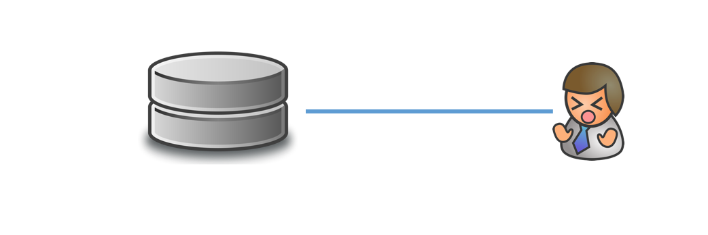
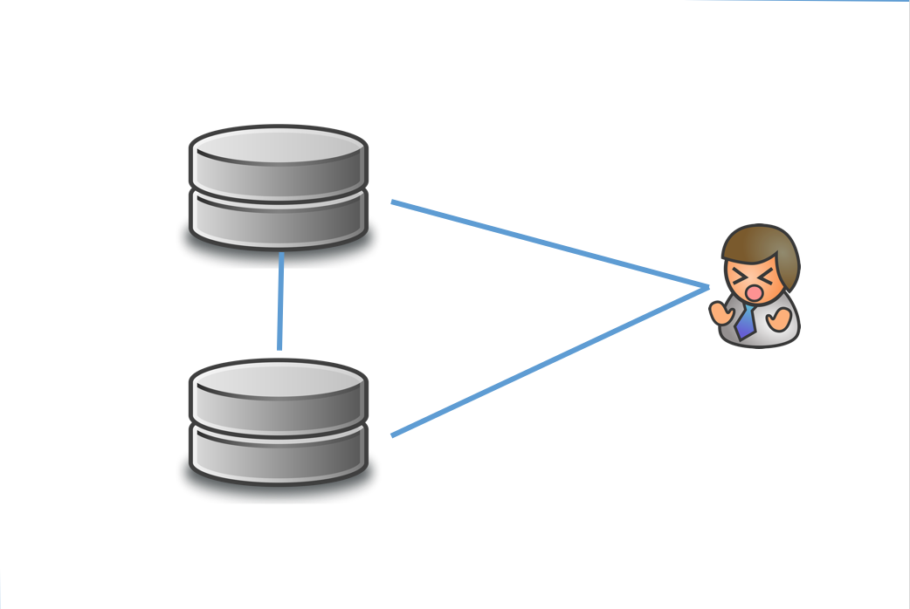
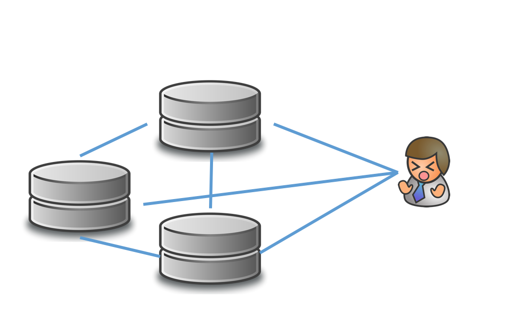
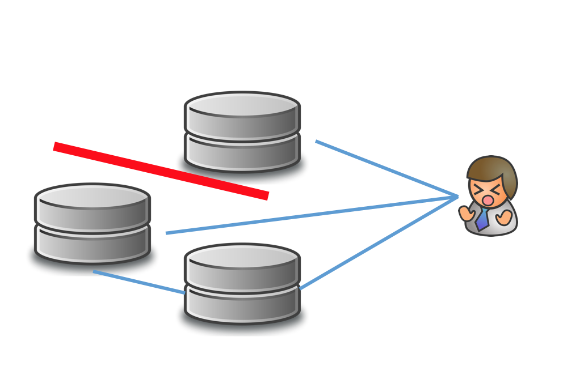
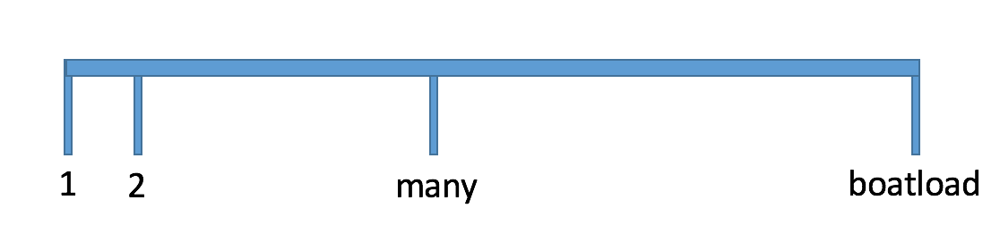
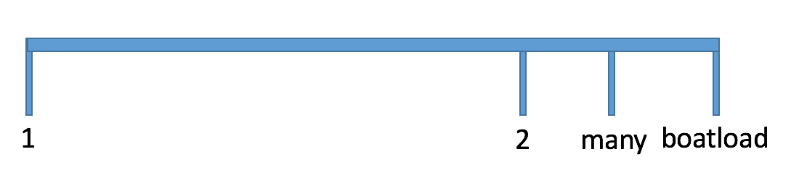
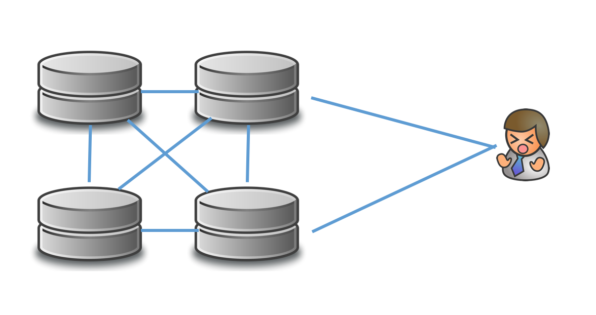
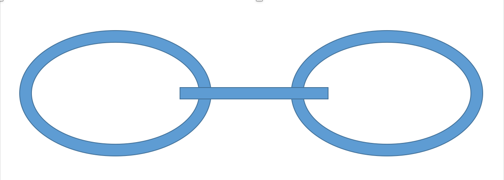
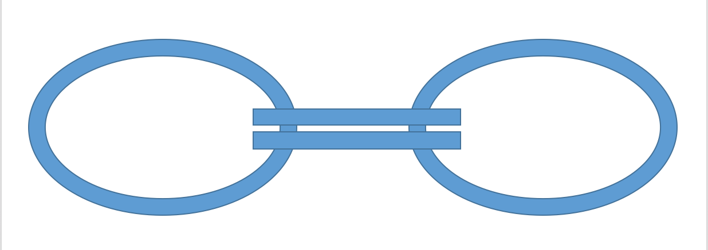

the built in demo track preloaded on my Ensoniq SD-1, the best sequencer / synth ever
uploaded to YouTube to help sell it. I now have a Yamaha digital piano instead
my.age *= 2
numbers in N?
a whole bunch
א0
∞
numbers in distributed systems?
4
1

2

many

many

boatload


thumbsUp.setColorTo(BLUE)
thumbsUp.setColorTo(BLUE) likesCounter += 1
video sharing service, a novel
social / mobile / localnot actually a video sharing service
v = videos.get(videoID) v.likesCount += 1 db.store(v)
knock knock race condition! who's there?
// TODO: not safe, we need to add // transaction v = videos.get(videoID) v.likesCount += 1 db.store(v)
UPDATE videos SET likesCount = likesCount+1 WHERE video_id = $videoID
like counters, like counters everywhere
UPDATE videos SET likesCount = likesCount+1 WHERE video_id = $videoID UPDATE users SET likesCount = likesCount+1 WHERE user_id = $userID UPDATE users SET likesCount = likesCount+1 WHERE user_id = $video.OwnerID
BEGIN TRANSACTION UPDATE videos ... $videoID UPDATE users ... $userID UPDATE users ... $video.OwnerID COMMIT TRANSACTION
WIN!!!
knock knock who's there?
DEADLOCK
if (likesCount % 1000 == 0) sendEmail()
email must be sent! but not more than once
partitions, replication, consultants, distributed transaction, background threads, workers, consultants, timers, distributed locks, consultants
https://en.wikipedia.org/wiki/Fallacies_of_distributed_computing
http://www.rgoarchitects.com/Files/fallacies.pdf
A chain is as strong as its weakest link
99%
X hours per year?
3.65 days per year
Xms per minute?
600ms per minute
99.9%
X hours per year?
8.76 hours per year
Xms per minute?
60ms per minute
99% allow 600ms/min
young pause ~150ms every ~10secs
Lies, damned lies, and statistics

Systemic failures are a thing
OS update
self-replicating bug
SSL expiration
for web scale apps, we need a web scale database
auto sharding!
5% 5%
after a few months
50% 55%
a couple of months more
85% 95%
a couple of weeks later
90% 100%
auto sharding!
90% 100% 0%
auto sharding?
89% 100% 1%
auto sharding :(
88% 100% 2%
auto sharding @#!$@#$
88% 99% 3%
many hours later ...
auto sharding!
63% 64% 63%
delivery guarantees
the simpler the cheaper and the more reliable
no tx, no ordering, soft guarantees, eventual consistency
A chain is as strong as its weakest link
if it is built from single points of failuers
redundencize all the things


break temporal dependence
queues - embrace them
the simpler the cheaper and the more reliable
minimize systemic failure impact
shuffle sharding
, regionalization
vertical context
local concistency
(per Special relativity) - observed order of events depends on frame of reference
It’s usually causal ordering that we’re after anyway. People who say otherwise don’t quite realize that there is no now in a distributed system
strong consistency can be bad here!
perhaps trade availability?
money donations instead of likes
write to a queue in Azure
or to a queue in another Azure region
or to a queue in AWS
then fan in
fan-out / subscriptions / event-sourcing
contextual and bounded tradeoffs
eliminating duplications
capture user's intent
talk with the customer, listen and explain
for web scale apps, we need a web scale architecture
auto sharding with over-subscription!
1%/1%/1%/1%/1% 1%/1%/1%/1%/1%
auto sharding with over-subscription!
20%/20%/20%/20%/20% 20%/20%/20%/20%/20%
auto sharding with over-subscription!
20%/20%/20% 20%/20%/20%/20% 20%/20%/20%
monitor, practice failures
consistent / rendezvous / jump hashing
https://www.awsarchitectureblog.com/
I'm Ken, and I'll be here all week!
@kenegozi
http://kenegozi.com
github.com/kenegozi